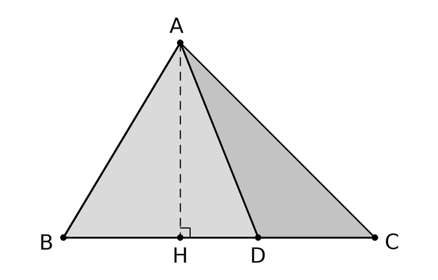

Kiến thức cần nhớ ✓ đã học
- ●
- ○
- ○
- ○
Dạng toán là gì
Bài toán tỉ số diện tích tam giác là bài toán so sánh diện tích hai tam giác, hoặc một phần với cả hình, bằng cách so sánh đáy và đường cao của chúng. Ta không cần đo độ dài thật.
Cách nhận ra: đề thường có ba điều.
- Một điểm nằm trên một cạnh, kèm cách chia cạnh ấy:
- “M là trung điểm của BC”, “BD=2×DC”, “AN=14AC”, “BM=MN=NC”.
- Đề cho diện tích của cả hình hoặc của một phần.
- Đề hỏi diện tích một tam giác nhỏ, một phần còn lại, hoặc hỏi tỉ số diện tích.
Nhắc lại: diện tích tam giác bằng đáy nhân chiều cao rồi chia 2. Cô viết SABC thay cho “diện tích tam giác ABC”.
Hai tam giác chung đường cao là thế nào?
- Ở hình dưới, điểm D nằm trên cạnh BC. Hai tam giác ABD và ADC có chung đỉnh A, còn hai đáy BD và DC nằm trên cùng đường thẳng BC.
- Chiều cao của cả hai đều là đoạn AH kẻ từ A vuông góc xuống BC. Đoạn AH kẻ từ đỉnh vuông góc xuống đáy gọi là đường cao; độ dài của nó là chiều cao.
- Ta nói hai tam giác ấy chung đường cao AH.

![Hai hình đặt cạnh nhau. Hình bên trái: tam giác ABC, D trên cạnh BC, nối AD; đường cao AH vẽ nét đứt, có dấu góc vuông tại H; tam giác ABD tô xám; chú thích “Chung đường cao AH”. Hình bên phải: hai tam giác MPQ và NPQ có chung cạnh PQ nằm ngang, M ở trên PQ, N ở dưới PQ; từ M và từ N kẻ hai đường vuông góc xuống PQ, nét đứt; tam giác NPQ tô xám; chú thích “Chung đáy PQ”. Hình thứ ba ở dưới: một hình chữ nhật, đỉnh của tam giác nằm trên cạnh trên, đáy là cạnh dưới; tam giác tô xám, chiều cao kẻ từ đỉnh xuống cạnh dưới vẽ nét đứt; chú thích “Bằng nửa hình chữ nhật”.](hinh/ti-so-dien-tich-tam-giac/kt-hai-quy-tac.png)